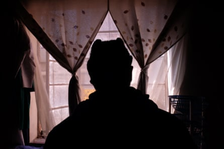
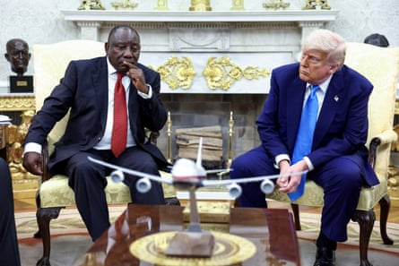
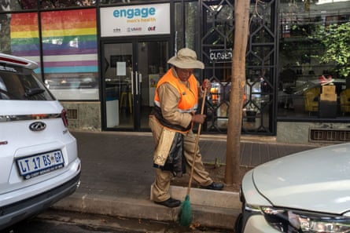
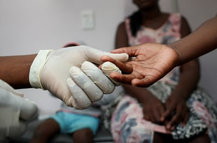
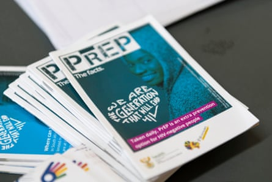

L ebo is very afraid. She used to go to a clinic where sex workers such as her could get HIV medication without facing discrimination. But the dispensary, in Johannesburg’s run-down central Hillbrow district, shut down in January, when Donald Trump cut US funding to the global HIV response.
“I’m weak. I’m an old woman,” says the 62-year-old. “So please, we need help; we are suffering.” Lebo, who only wants her first name shared, is now spending 30% of her monthly income of 1,500 rand (£62) on antiretroviral (ARV) medication.
The situation in South Africa, the centre of the world’s HIV pandemic , is a “crisis”, says Ramphelane Morewane, who leads the HIV/Aids response in the country’s health ministry.
HIV-positive Lebo, 62, who lost access to her treatment when US funding cuts forced a specialist clinic serving sex workers like her to close.Photograph: Rachel Savage/The Guardian
Lebo will not go to a government clinic again, after being shouted at and refused treatment. “They said, ‘Go back, it’s not your clinic. It’s not me that said that [the sex workers’] clinic must close; it’s not my problem.’ I was crying,” Lebo says.
In 2023, about 7.7 million people were living with HIV in South Africa according to UNAids, roughly 12% of the population. However, the government’s approach to HIV in recent decades is a world away from former president Thabo Mbeki’s denialism in the 2000s. New infections were less than a third of what they were in 2000, according to the UNAids data, while deaths were a fifth of the 260,000 seen at the epidemic’s peak in 2004.
But because of the loss of US aid, which the South African government said was meant to be 7.6bn rand (£316m) for the 12 months to March 2026, accounting for 17% of that year’s funding for the HIV response, those gains are under threat.
South Africa’s Cyril Ramaphosa with Donald Trump at the White House. US cuts shut many clinics in South Africa.Photograph: Reuters
Trump ordered a 90-day freeze on US foreign aid , which included the “president’s emergency plan for Aids relief” ( Pepfar ), hours after taking office on 20 January. Within weeks, South African clinics serving “key populations” – minority groups particularly vulnerable to contracting HIV, such as sex workers, trans women, men who have sex with men, and injecting drug users – that had been receiving Pepfar funding had to shut their doors.
In February, Trump signed an executive order specifically cutting aid to South Africa , accusing it of racial discrimination against white minority Afrikaners .
Unpublished South African government data obtained by Reuters showed that viral-load testing, which indicates whether people with HIV are preventing it from progressing to Aids, had fallen up to 21% in March and April for groups including pregnant and breastfeeding women, infants and 15- to 24-year-olds. Among those who were tested, the percentage who had successfully suppressed the virus fell 3.4% in March and 0.2% in April.
Experts have accused the government of South Africa’s president, Cyril Ramaphosa, of not making up for the lost funds and downplaying the issue.
“We are seeing this from African governments across the region, and it’s denial and it’s completely predictable,” says Prof Francois Venter, a researcher at the University of the Witwatersrand (known as Wits), adding: “It’s embarrassing when you’re supposed to be able to run your own programmes. South Africa is particularly revolting, because they actually do have the resources.”
Morewane says his department requested emergency funding from the treasury, which said it was evaluating the request.
“A recommendation will be made to the minister of finance once the process has concluded. Unfortunately, we do not have a timeline at the moment,” a spokesperson said by email.
The Engage men’s health clinic in Johannesburg, which closed in January after the cuts ordered by the Trump administration.Photograph: Joao Silva/The New York Times/Redux/eyevine
Morewane says that, in the meantime, government clinics have been following up individually to transfer patients of specialist services that have been shut down.
Palesa Mafoko used to get her ARVs every three months at the “hotspot” east of Pretoria, where she is a sex worker. She praised the mobile clinic run by the Wits reproductive health and HIV institute (Wits RHI), which had nine (now-shut) HIV clinics for sex workers and transgender people in four provinces.
“It was outstanding. They were very patient with me. They would ask how was I, how am I feeling today,” the 37-year-old says.
In mid-February, Mafoko says, she and five other sex workers were turned away from a government clinic, with staff saying they needed referrals. Mafoko, who has been HIV positive for four years, is now no longer taking ARVs, which she said she cannot afford to buy herself.
“I do have blood just like anyone else. My choice of career is the one that gives me a bed. So I don’t want to be denied services because of the choice of my career,” she says.
South Africa’s government cannot easily rebuild the networks among vulnerable communities that have been shattered, says Minja Milovanovic, a Wits researcher who is investigating the impact of the funding cuts.
A nurse takes a blood sample from a child for an HIV test at a clinic in Diepsloot, a township north of Johannesburg.Photograph: Siphiwe Sibeko/Reuters
“You’ve lost the trust of individuals who have been used to accessing your services,” she says. “Trust takes years to build with some of the most vulnerable populations – which was literally destroyed overnight.”
Amanda, 39, was employed as an outreach worker at the Wits RHI clinic in Hillbrow, in central Johannesburg, but she has been forced back to touting for clients. On a bench outside a nearby park, two women immediately started talking to her in a mixture of languages. “HIV is going to kill us,” one says.
Amanda is also HIV positive and does not want to go to a government clinic, where she fears rejection. Just as she was about to run out of ARVs, she managed to get a client to buy two months’ worth of medication. “I said it was for someone at home, because otherwise I would lose a client,” she says.
Educational pamphlets about PrEP – drugs that cut the risk of getting HIV from sex by 99% – at Soweto’s Diepkloof Clinic.Photograph: Ihsaan Haffejee/The New York Times/Redux/eyevine
Meanwhile, there are fears of a surge in new infections. Globally, Pepfar provided about 90% of the drug pre-exposure prophylaxis (PrEP). Taken correctly, PrEP reduces the risk of getting HIV from sex by 99%.
“There are people, unfortunately, who are going to fall through the cracks,” says Johan Hugo, who ran a now-shut clinic for men who have sex with men, metres from Cape Town’s picturesque V&A Waterfront.
“I dealt with … someone who was chased out of the house, who was doing sex work to survive, who was doing drugs. I mean, how can you think that person is just going to be resilient?”
Sparkle (not her real name), a transgender woman, lost her job with the Wits RHI transgender clinic in Hillbrow in February, along with a free supply of PrEP. She worries her boyfriend is having sex with other people and could infect her with HIV.
She also lost access to gender-affirming hormones, which enabled her to grow breasts and feel like herself. “It helped me a lot, to a point whereby I’m so proud when I walk in the community, whereby I’m not afraid of anything,” she says. “It’s taking me back again to say I don’t have hormone pills.”